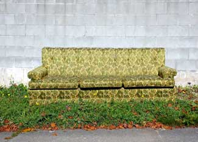

Don't let the title, "How to Reupholster Furniture" scare you off! Upholstery is just one more activity that's wrapped in mystery for no good reason whatsoever. Once you get past your mental block about reupholstering furniture, you'll find that every piece of stuffed furniture is made so that the fabric can be replaced when it wears out, and anyone with basic sewing skills and simple tools (hammer, screwdriver, pliers, staple gun) can do it. There's no need to take an expensive course, or any course at all. Your own sofa or whatever will give you all the instructions you need as you go along. YOu will be pleased with the final product and the fact that you saved money in the process.
My "teacher" was an easy chair that my husband, Jim, and I bought when we were first married. It was sturdy, attractive and very comfortable. Three children later, though, its covering had become badly soiled and worn. Professional reupholstering (we checked) would have cost more than the original price of the entire article, fabric, frame and all. Although we talked about doing the job at home, the chair's curved arms and deeply tufted backrest made the undertaking seem so complicated that we were afraid to try. Then the poor thing got to looking so sad that we had to choose between discarding it or tackling its renovation ourselves. So our adventures in reupholstery began.
My first move was to purchase some inexpensive dressweight cotton material. I knew it wouldn't hold up as upholstery, but figured that if the job turned out well we could duplicate our success later in better-grade fabric. As another precaution, I bought several yards more than I estimated we needed, with an eye to all the mistakes we were going to make.
Somewhere in the back of my mind, you see, lurked the notion that upholstery was made like a slipcover: that all the pieces were first sewed together, then pulled over the furniture, and only by some magic of professional skill did the covering fit like a glove. As we removed the old fabric from our chair, though, we were pleasantly amazed to find that it wasn't done that way at all. Instead, each section was stapled individually to the frame. This simplified matters immensely, since the only sewing necessary was the making of several darts and miters and the case for the seat cushion.
Despite our inexperience, the completed chair looked brand-new and professionally done. We had exercised care and patience to get the details right, yet the work hadn't been at all difficult. We were so proud of our masterpiece that we showed it to whomever stopped by, and soon friends and relatives were asking us to reupholster articles for them. Although we didn't earn any money by doing so, we did gain a great deal of experience with various fabrics and styles of furniture, enough that I feel ready to supply loose guidelines for anyone who's interested.
My first pointer is that you don't need guidelines, loose or otherwise - not really. The furniture will tell you how it was made. There are no mysterious inner goings-on to confound you. Still,for those who want them, here are some suggestions:
Let's say you have a chair you want to overhaul. Start by examining it closely. Note all details: skirt, welting, buttons, etc. Poke into the seams. Are they really sewn, they appear to be, or are they stapled or tacked? Commit the construction to memory.
Next look over the item to find the piece of fabric that should obviously come off first: usually the back or bottom. Carefully remove it by prying it loose. (Don't rip the cover free, you'll be using it later as a pattern.) If your memory isn't completely trustworthy, pin a paper on the segment cloth to identify it as "Number One" and to remind you of its location on the chair. Then note which section ought to come off next and treat it in the same way, marking it as "Number Two, outer right side" or whatever.
Keep making notes, mental or written, on how and where the fabric is attached to the frame, and don't disturb the batting or stuffing beneath. Carefully smooth out lumpy padding (this is very important if you want the finished product to look even). It's best not to remove the cushion casing unless you feel it's absolutely necessary, since the innards usually fall apart and lose their shape. Just cover right over the shabby material.
After all the ratty covering has been removed, step back and say, "Lord, what have I done?" This isn't really a necessary part of the procedure, but everyone does it on first seeing a favorite piece of furniture stripped down.
When you've recovered from the shock, you'll need fabric to attach to your hypothetical chair. A few words about cloth at this point: Jim and I have worked with various medium-weight cottons to very heavy tapestry materials. The tapestry was beautiful, cost $14.00 a yard and will undoubtedly last many years, but as far as I'm concerned, the birds can have it. Apart from the expense, the luxury textile thickness and stiffness made it so difficult to work with that the value of increased wearability was negated.
Medium-weight, softer fabrics are far less trouble to handle than heavy ones, and wear better than one might expect. Even the cheap dress cotton I used on that first chair surprised us by lasting four years. Still, it isn't easy to find a suitable patterns in ordinary yard goods, and I've settled on the more expensive drapery and upholstery materials as my usual first choice. Lately, though, I've thought that some of the new printed sheets would look wild on furniture. They're high-priced as bedding but would be a bargain as chair covers. Anyhow, use your own imagination.
One caution: Before you buy fabric, notice whether any parts of the old covering were cut on the bias to stretch around curves. If they were, some stripes or plaids won't look very attractive if used as replacement material.
Some people make a big point of measuring yardage so closely that not an extra inch of fabric will be left. I don't. I take loose measurements, figure on the high side and order more cloth than I think I'll need. There's always excess material, and it never goes to waste. In fact, it's one of the bonuses of doing my own upholstery. For example, I had enough fabric left from my first job to make matching curtains and throw pillows, a touch that suggests interior decorators and lots of money, when in reality I spent far less than I would have for blah store-bought ready-mades. Smaller amounts of leftover material can be used to make valances, footstools, covered wastebaskets or what have you.
OK, back to our naked chair. Take all the pieces of old covering and flatten them out (clip open any darts or seams). Arrange the shapes on the new fabric so as to waste as little as possible, and remember to leave an extra inch around each segment. (If your earlier research turned up any parts that must be cut on the bias, be sure to lay them out that way.) Place the cushion itself on the yard goods and trace around it twice for top and bottom. Measure its sides for length and width and mark out a strip to fit, again with an inch over for a seam allowance. Cut out all the parts, and keep each old piece together with its replacement for identification purposes. Use the scraps to make welting, trim, buttons and such.
When you apply the new material, you'll simply reverse the order in which you stripped off the sections of old covering: The last worn piece you removed from the chair will be the first new one to go back on, and so forth.
Use your heavy-duty staple gun to attach one side of the first piece of material to the chair in the same manner in which the old covering was fastened. Gently but firmly pull and stretch the cloth from the opposite direction and staple down the far border. Then secure the third side, pull gently from the free edge and fasten it down too. This is much easier done than said, fortunately, because the manner in which the material is stapled and stretched across the frame is the secret of professional-looking upholstery. The covering should be taut, without sags and wrinkles, but not so tight that there's no "give" and the fabric tears. If you're not satisfied with way things are going, remove the section and start over. Mistakes are easily corrected as they happen but impossible to fix later.
Sometimes a section of the original fabric is attached by means of a metal strip of tacks. When these are removed they usually become bent and are impossible to reuse. I'm sure they could be purchased, but we don't bother. Instead, Jim cuts a piece of cardboard the length and width of the metal strip and staples it in place (again, much more easily seen on your own article of furniture than described). If the last side of the piece was originally fastened with such a strip, I just secure it with blindstitching.
When I cover the cushion I baste the casing first to be sure the fit is good. Then I sew it on the machine, leaving an opening in the back large enough to insert the contents, and blindstitch the slit.
After all the fabric has been replaced there may be some tiny imperfections. A few blindstitches taken here and there will eliminate these, or you can just live with them since you'll soon begin to notice that even brand-new furniture has minor flaws which the average person never spots.
If you want to keep such imperfections to a minimum though, beware of shortcuts. Jim and I re-covered a chair for a friend who then decided to do his own sofa, but felt that our way was too much trouble. Instead, he left the fabric in place, traced newspaper patterns from the couch itself and stapled the new material right over the old. The result didn't reach the standard we've come to expect of our our work. Every piece of furniture is different and you must move the covering to find out how your particular article was done, or so, at least, it seems to me.
Another reason why Jim and I have had good results with home upholstery is that we've always worked with pieces which were basically sound and only needed fabric replaced. There's so much good furniture floating around that it isn't usually necessary to bother with something that's popping springs. On more than one occasion we've raided the dump for perfectly usable articles which someone has discarded only because the material was soiled. (Of course, one has to get them before rains mildew the stuffing.) At garage sales, faded and worn pieces often go for a few dollars. Folks just aren't aware that they could renew the covering so easily and inexpensive.
And there you have the only course in upholstery you'll ever need. Jim and I have worked together because we like to, but one person could go it alone. It just takes a bit longer. Love and peace!
|
 ISTOCKPHOTO/KEVIN SU Extend the life of an old piece of furniture with some new fabric. |
|
|